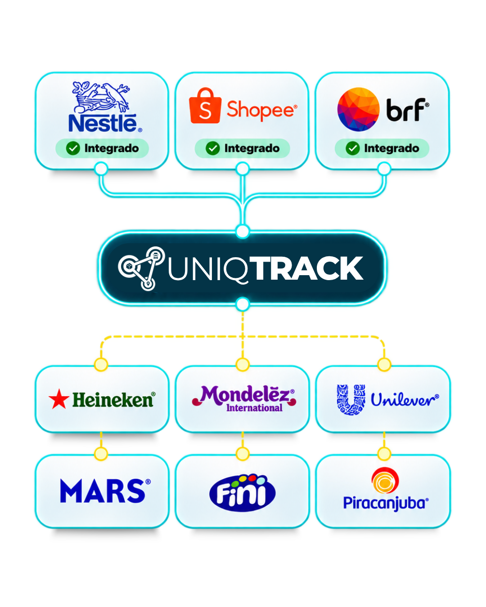
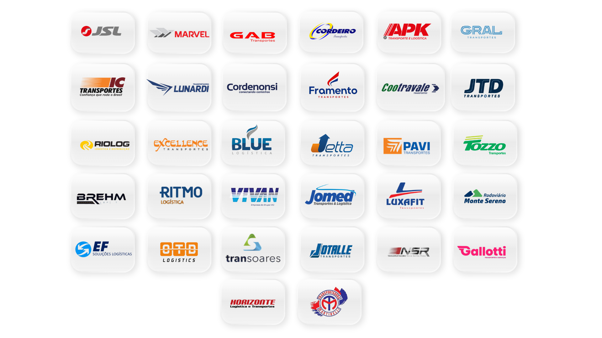
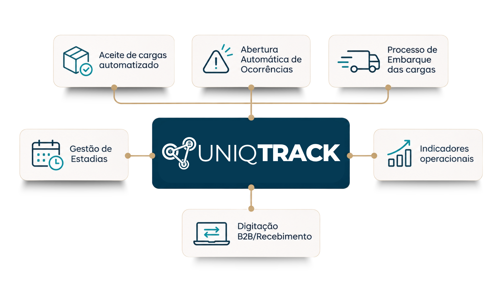
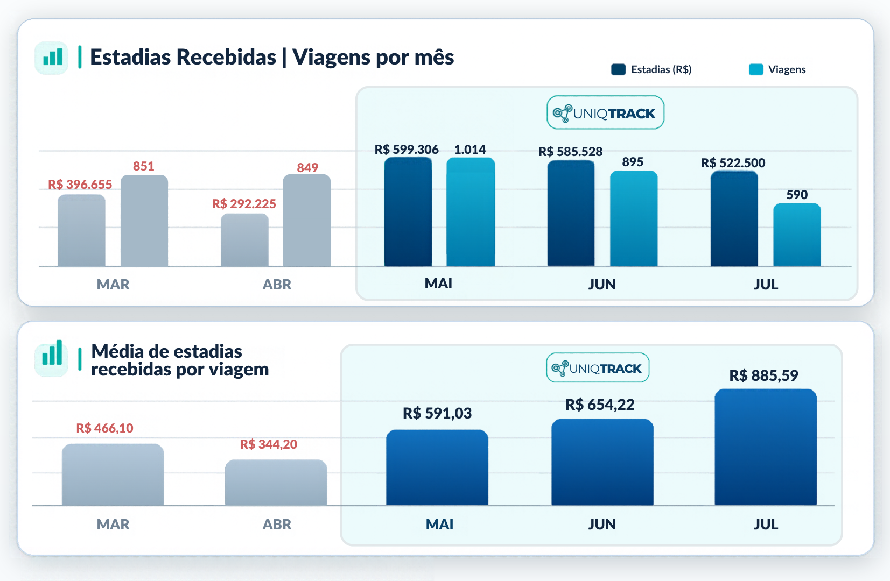

Aceite de cargas
Automação de tarefas de aceite conforme regras e fluxos aplicáveis.

A transportadora cumpre prazo, mantém indicador e protege contrato sem aumentar a equipe.
QUEM JÁ TRANSFORMA A GESTÃO
Transportadoras que fazem parte da nossa jornada de tecnologia, operação e eficiência.

O QUE PODE SER AUTOMATIZADO
As funcionalidades dependem dos fluxos, regras e integrações implementadas para cada operação.
Automação de tarefas de aceite conforme regras e fluxos aplicáveis.
Apoio ao controle de ocorrências e valores de estadias conforme regras aplicáveis.
Redução de atividades manuais em processos de preenchimento de informações.
Apoio à qualidade dos apontamentos e seu acompanhamento.
Menos alternância entre portais, mais organização e visibilidade.
Otimização de conferências conforme integrações e regras implementadas.

RESULTADOS OBSERVADOS
Evolução de estadias recebidas por uma transportadora, considerando os meses apresentados no gráfico.

VAMOS CONVERSAR
Preencha seus dados e prepare uma mensagem para nossa equipe no WhatsApp.
Seus dados serão usados somente para o contato comercial solicitado. O envio só ocorre quando você confirmar no WhatsApp.
Converse com nossa equipe e descubra como o UniqTrack pode apoiar os processos da sua transportadora.
Falar com um especialista →